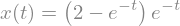
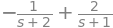
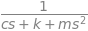

Ordinary Differential Equations and the Laplace Transform#
Every transfer function in this book, starting with Block Diagram, is built on one move: turning a linear ODE into an algebraic equation in \(s\). This page makes that move explicit before relying on it — solving a constant-coefficient ODE directly, then again via the Laplace transform, and showing the two answers agree.
from sympy import *
init_printing()
1. Linear ODEs with Constant Coefficients#
Physical systems in this book (the rectilinear system, the flyball
governor, …) are modeled by linear, constant-coefficient ODEs. SymPy’s
dsolve solves these directly, symbolically, given initial conditions.
Take the damped mass-spring system as a running example:
t = symbols('t', positive=True)
x = Function('x')
ode = Eq(x(t).diff(t, 2) + 3 * x(t).diff(t) + 2 * x(t), 0)
ics = {x(0): 1, x(t).diff(t).subs(t, 0): 0}
sol_dsolve = dsolve(ode, x(t), ics=ics)
sol_dsolve

Keep this result — Section 4 solves the same ODE through the Laplace transform instead, and the two should match exactly.
2. The Laplace Transform#
The (unilateral) Laplace transform of a time-domain function \(f(t)\), defined for \(t \geq 0\), is
SymPy computes this integral symbolically for the standard signals used throughout the book.
t, s, a, omega = sp.symbols('t s a omega', positive=True)
f = sp.Function('f')
# Unit step
step_L = sp.laplace_transform(1, t, s, noconds=True)
# Exponential decay
exp_L = sp.laplace_transform(sp.exp(-a * t), t, s, noconds=True)
# Sinusoid
sin_L = sp.laplace_transform(sp.sin(omega * t), t, s, noconds=True)
step_L, exp_L, sin_L
---------------------------------------------------------------------------
NameError Traceback (most recent call last)
Cell In[3], line 1
----> 1 t, s, a, omega = sp.symbols('t s a omega', positive=True)
2 f = sp.Function('f')
3
4 # Unit step
NameError: name 'sp' is not defined
These three transform pairs — step, exponential, sinusoid — are the building blocks behind essentially every input and every pole location used later in the book.
3. Key Properties#
Linearity#
Immediate from the integral definition, since integration is linear.
The Differentiation Property#
This is the property that makes transfer functions possible:
Every derivative in an ODE becomes a power of \(s\) — under zero initial conditions, \(\dot{f}(t) \to sF(s)\) exactly, which is why “\(s\)” is so often described as standing in for “\(d/dt\)” in this book’s earlier chapters.
Let’s verify this symbolically for a generic function.
f_t = sp.Function('f')(t)
f0 = sp.symbols('f0') # f(0)
# SymPy's laplace_transform on a derivative directly
deriv_L = sp.laplace_transform(f_t.diff(t), t, s, noconds=True)
deriv_L
SymPy returns this in terms of the transform of \(f(t)\) itself
(written LaplaceTransform(f(t), t, s)), plus the initial-condition term
— exactly the differentiation property stated above.
Time-Shift and Convolution#
Convolution in time becomes ordinary multiplication in the Laplace domain — this is why cascading blocks in a block diagram corresponds to multiplying their transfer functions.
4. Solving an ODE via the Laplace Transform#
Now solve the same ODE from Section 1 (\(\ddot{x} + 3\dot{x} + 2x = 0,\ x(0)=1,\ \dot{x}(0)=0\)), but this time by hand-transforming it into an algebraic equation in \(s\), solving for \(X(s)\), then inverse-transforming.
X = sp.symbols('X') # stand-in for X(s)
x0_val, xdot0_val = 1, 0
# Apply the differentiation property term by term:
# L{x''} = s^2 X(s) - s*x(0) - x'(0)
# L{x'} = s X(s) - x(0)
# L{x} = X(s)
algebraic_eq = sp.Eq(
(s**2 * X - s * x0_val - xdot0_val) + 3 * (s * X - x0_val) + 2 * X,
0
)
algebraic_eq
X_s = sp.solve(algebraic_eq, X)[0]
X_s = sp.apart(X_s, s) # partial fractions, ready for term-by-term inversion
X_s

x_t = sp.inverse_laplace_transform(X_s, s, t)
sp.simplify(x_t)
Compare this against sol_dsolve from Section 1 — same answer,
reached by transforming the problem into algebra, solving it there, and
transforming back. This detour through \(s\) is exactly what every transfer
function in this book is implicitly doing.
5. Transfer Functions from Laplace#
For a general linear ODE relating input \(u(t)\) to output \(y(t)\), Laplace- transforming under zero initial conditions turns every derivative into a power of \(s\), leaving a purely algebraic relationship:
This is precisely the transfer function used from Block Diagram onward. The zero-initial-condition assumption is what lets \(G(s)\) depend only on the system, not on how it happened to start — any nonzero initial conditions just add extra terms (as seen explicitly in Section 4) on top of this same \(G(s)\).
m1, c1, k1 = sp.symbols('m c k', positive=True)
Y, U = sp.symbols('Y U')
# m*y'' + c*y' + k*y = u, zero initial conditions
G = 1 / (m1 * s**2 + c1 * s + k1)
G

6. Initial Value and Final Value Theorems#
Two shortcuts avoid inverse-transforming altogether when only the endpoints of \(f(t)\) are needed:
The Final Value Theorem is exactly the tool used on the Tracking Accuracy of a Feedback System page to compute steady-state error directly from \(E(s)\), without ever inverse-transforming the error signal.
F_s = X_s # reuse X(s) from Section 4
initial_value = sp.limit(s * F_s, s, sp.oo)
final_value = sp.limit(s * F_s, s, 0)
initial_value, final_value
Check against the time-domain solution: \(x(0) = 1\) (matches the initial value theorem) and \(x(t) \to 0\) as \(t\to\infty\) since both poles (\(-1, -2\)) are stable (matches the final value theorem).
What’s next#
With ODEs and the Laplace transform established here, and rank/ eigenvalues/matrix-exponential established in the Linear Algebra Primer, both Block Diagram and State-Space Modeling can now be read as two different endpoints of the same starting point: a linear ODE.